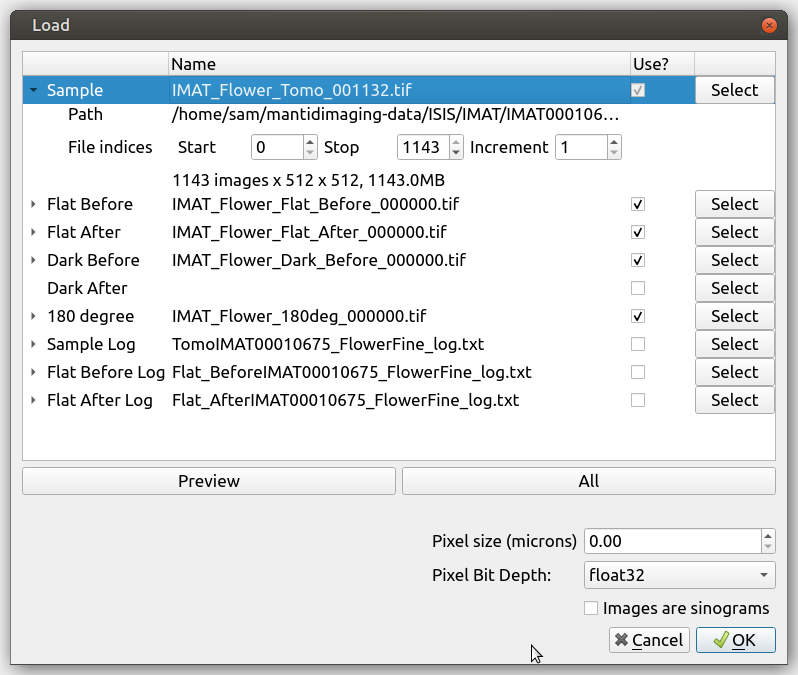
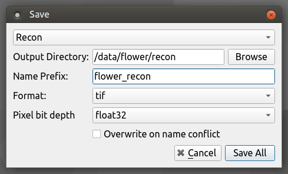

Loading and Saving¶
Loading and saving data is performed via the Load and Save options on the File menu.
Loading¶
Load Dataset¶
When Load dataset is selected, the following dialog will appear:

This allows you to select the data you wish to load; The Sample entry should be used to select the first projection TIFF file, the remaining TIFF files in the directory will be automatically detected if their filename matches the pattern. The loading dialog will try to automatically find associated files including flat fields, dark frames, 180 degree projections and sample logs.
Once data has been selected, its shape is inspected and the stack index fields are populated as shown below:
The Start and End fields control the range of images that are loaded and Increment defines the interval at which images are selected.
To quickly load only 10 images from a stack, press the preview button, which will set a large enough Increment.
Pixel Bit Depth is used for the estimated memory size calculation, typically images will use 32bit floating point numbers as the pixel format so this can be left at the default value of float32.
Note
Note that the image filenames must be in the form TITLE_XXXXX, with XXXXX being the image number.
Load Images¶
Load images can be used to load a stack contained in a directory or a single image.
Load NeXus File¶
NeXus Files can be loaded by selecting the “Load NeXus file” on the File menu. This brings up the NeXus Load dialog shown below.

From here you can choose a NeXus file that you wish to load. The program will then scan its contents and check for a
NXtomo entry. If an entry is found, information about the file will be displayed in the dialog. The data sizes
are also displayed so that a user can check that the image key and data field have the same number of elements. The
“Use?” checkbox can be used to select which images you wish to load.
If the required information could be found in the file, then the OK button will be enabled. Otherwise the button will be disabled.
As in the case of loading a dataset, there is also the option to load a subset of the projection data either by manually setting an increment or by clicking on the “Preview” button. The “All” button can be used to change the increment so that the entire projection data is loaded. There are also options for setting pixel size and pixel bit depth.
From here, you can press OK to load the file as a dataset. The name given to the images will be taken from the
title field in the NeXus file if one is found, otherwise the images are given the name “NeXus Data.”
Load log for stack¶
This can be used to load a log file with metadata about the stack. It supports text and CSV files generated by IMAT.
The expected header for a text file is:
TIME STAMP IMAGE TYPE IMAGE COUNTER COUNTS BM3 before image COUNTS BM3 after image
and for a CSV file
TIME STAMP,IMAGE TYPE,IMAGE COUNTER,COUNTS BM3 before image,COUNTS BM3 after image
Note that the log can also be chosen in the Load Dataset dialog.
Load projection angles¶
This can be used to load a file with projection angles. Angles are expected in DEGREES as comma separated values on a single line, or a single angle value per line.
180 Degree Projections¶
In the case of both tiffs and NeXus files, Mantid Imaging will try to find a 180 projection in the data. If one has not been found, then it will try to look for a projection that is <= 1 degree away from 180. Should this fail then you will be asked if you wish to use the next closest image. Bear in mind that the absence of a 180 degree projection means that the “Correlate 0 and 180” algorithm will not be available for the reconstruction.
A new 180 projection can be loaded with the Load 180 degree projection option. This will override any already loaded 180 projection. This option will only work correctly with a stack loaded through the Load Dataset method.
Saving¶
The Save options are only enabled when at least one stack is loaded.
Save as Image Files¶
When Save as Image Files is selected the save images dialog appears:
This prompts you to select the image stack you wish to save, the directory in which you wish to save it and the name prefix. In the case of TIFF and FITS the individual image filenames will be a concatenation of this prefix and the index of the image in the stack.
The Overwrite option removes checking for existing data of the same name. When disabled an error will be raised if the specified output directory is not empty prior to saving.
Save as a NeXus File¶
When Save as NeXus File is selected the save NeXus dialog appears. Only Datasets with sample images data can be saved as NeXus files. A sample name and an output directory are required before a save can be attempted.